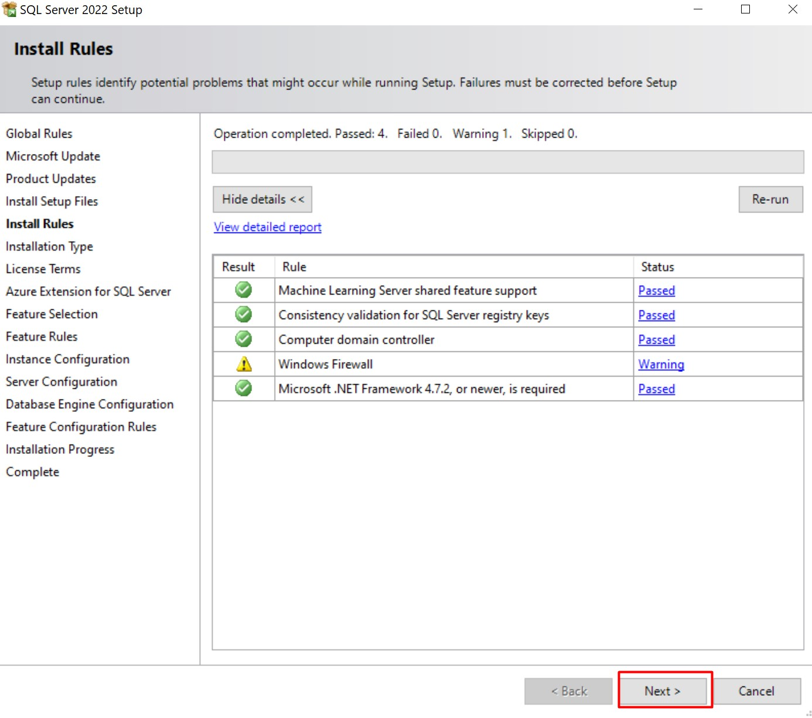
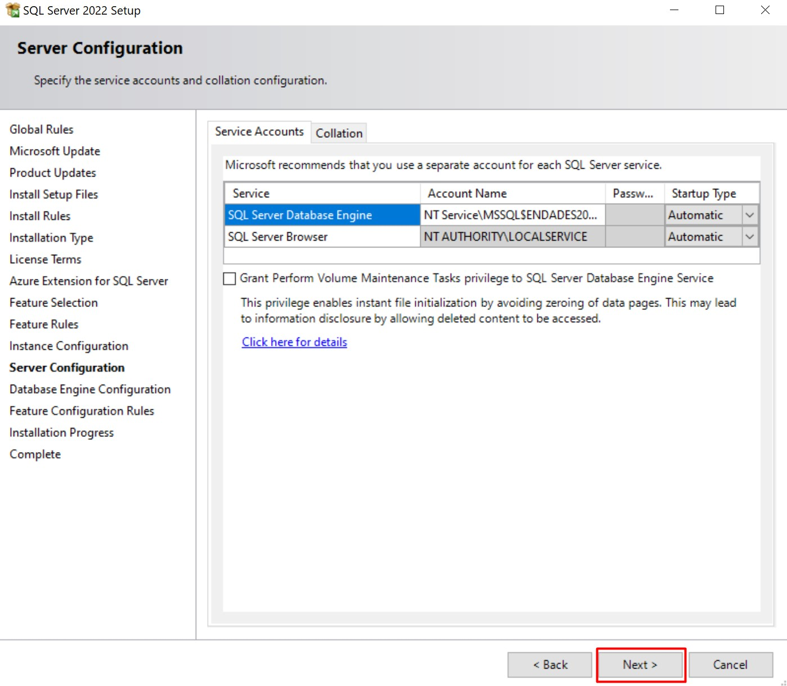

Requisitos del entorno ENBLAU
1. Requisitos para la configuración de la App ENBLAU
Antes de proceder con la instalación y configuración de ENBLAU, es necesario realizar algunas configuraciones previas en el entorno donde se va a instalar la aplicación.
1.1. Antivirus y Firewall
Sigue las recomendaciones del apartado 2. Ajustes del antivirus y firewall en Configuración del Sistema.
2. Instalación de ENBLAU
- Ejecuta el instalador
Setup Enblau.msiproporcionado por ENDADES con doble clic.

- Al iniciar la instalación, se abrirá la ventana de Endades Suite Setup. Sigue los siguientes pasos:

-
Acepta los términos de la licencia marcando la casilla correspondiente.

-
Especifica la ruta donde se instalará ENBLAU.

-
Haz clic en "Instalar" para comenzar la instalación.

-
Finaliza el proceso.

3. Instalación y creación de la instancia de SQL Server
Para poder utilizar ENBLAU es necesario instalar SQL Server y crear una instancia. Esto se puede hacer automáticamente con un archivo .bat o manualmente.
3.1. Instalación automática con .bat
- Accede desde el explorador de Windows a la ruta de instalación de ENBLAU, por ejemplo:
C:\ENBLAU\Datos, y localiza el archivo00 - InstalaciónSQL.bat.

- Ejecuta el archivo
00 - InstalaciónSQL.batcomo usuario administrador. Esto instalará SQL Server 2022 y creará la instancia ENDADES2022.


- Verifica que la instancia se haya creado correctamente desde SQL Server Configuration Manager:

Nota: Si no puedes ejecutar el archivo
.bata pesar de tener permisos de administrador, es posible que esté siendo bloqueado por el antivirus o que el cortafuegos (firewall) esté impidiendo alguna de las conexiones que el script intenta realizar. Verifica si el antivirus ha puesto el archivo en cuarentena o si el firewall está restringiendo el acceso a la red o a recursos específicos.
3.2. Instalación manual
- Accede a la ruta
C:\ENBLAU\Datosy localiza el ejecutableSQLEXPR_x64_ENU.exe. Alternativamente, puedes descargarlo desde:
https://www.microsoft.com/es-es/download/details.aspx?id=104781

- Ejecuta el instalador y sigue los pasos guiados:





Nombre de la instancia:
ENDADES2022


Contraseña del usuario
sa:Endades$0


4. Instalación de SQL Server Management Studio (SSMS)
Se recomienda instalar SQL Server Management Studio 20 en el entorno donde se haya instalado ENBLAU y SQL Server.
- Descarga la versión desde:
https://learn.microsoft.com/es-es/ssms/release-notes-20

- Sigue las instrucciones oficiales de instalación desde:
https://learn.microsoft.com/es-es/ssms/install/install
5. Creación de la base de datos ENBLAU
5.1. Crear mediante .bat
- Accede a la ruta de instalación de ENBLAU, por ejemplo:
C:\ENBLAU\Datos, y localiza el archivo01 - CreaciónDB.bat.

-
Ejecuta el archivo como usuario administrador. Este ejecutará los scripts
CreateDB.sqlyStructure.sqlubicados enC:\ENBLAU\Datos\Scripts. -
Una vez completado, se creará una base de datos llamada Easywork en la instancia
servidor\ENDADES2022, la cual será utilizada por ENBLAU.
Nota: Si no puedes ejecutar el archivo
.bata pesar de tener permisos de administrador, es posible que esté siendo bloqueado por el antivirus o que el cortafuegos (firewall) esté impidiendo alguna de las conexiones que el script intenta realizar. Verifica si el antivirus ha puesto el archivo en cuarentena o si el firewall está restringiendo el acceso a la red o a recursos específicos.
5.2. Creación Manual
- Accede a la ruta de instalación de ENBLAU, por ejemplo:
C:\ENBLAU\Datos\Scripts, y localiza los scriptsCreateDB.sqlyStructure.sql.

- Abre SQL Server Management Studio, conéctate al servidor correspondiente, por ejemplo:
servidor\ENDADES2022. Asegúrate de usar el usuario sa y la contraseña Endades$0.

- Abre primero el archivo
CreateDB.sqly ejecútalo.

- Luego repite el mismo proceso con el archivo
Structure.sql.
⚠️ Importante: Los scripts deben ejecutarse en el orden indicado: primero CreateDB.sql, luego Structure.sql.
6. Selección de la base de datos en ENBLAU
- Al abrir ENBLAU por primera vez, se solicitará seleccionar una base de datos. Haz clic en Aceptar.

- En la ventana de enCONNECT(app que se abre para Seleccionar base de datos), en el campo Servidor, selecciona la instancia creada, por ejemplo:
servidor\ENDADES2022.

- Haz clic en Cargar base de datos, despliega el campo correspondiente y selecciona Easywork de la lista.

7. Conexión a unidad de red
Para conectarse a ENBLAU desde un equipo con Windows, es necesario configurar correctamente la conexión a la unidad de red.
Este paso es fundamental para que el programa funcione adecuadamente.
Consulta la guía detallada en el siguiente enlace:
Conectar unidad de red
Nota: Para más información sobre Posibles errores
⚠️ Importante: Es obligatorio utilizar como mínimo SQL Server 2022 para garantizar la compatibilidad con las versiones de ENBLAU y enSITE.
 Español
Español
 English
English
 Italiano
Italiano
 Português
Português